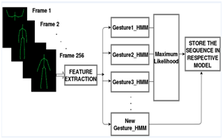
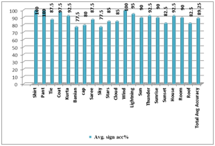

Hand gesture recognition is one of the leading applications of human computer interaction. Here, dynamic hand gesture recognition for few subset of Indian sign language recognition was considered. The use of depth camera such as Kinect sensor gave skeleton information of signer body. After detailed study of dynamic ISL vocabulary with reference to skeleton joint information, we have identified angle as a feature with reference to two moving hand. Here, real time video has been captured and gesture was recognized using Hidden Markov Model (HMM). Ten state HMM model was designed and normalized angle feature of dynamic sign was being observed. Maximum likelihood probability symbol was considered as a recognized gesture. Algorithm has been tested on ISL 20 dynamic signs of total 800 training set of four persons and achieved 89.25% average accuracy.
There are following parts in the project.
In India, the main mode of communication between the deaf and the outside world is Indian Sign Language. Vision based approach is found more suitable and practical as compared to hardware based approach. Vision based processing can be divided into broadly two types:2D web camera and 3D stereo camera. Problems faced by the 2D cameras are: complex algorithms to handle segmentation of colour, lack of depth information and brightness factor. With the advancement of sensor technology in computer vision, Microsoft Kinect sensor is widely used to deal with dynamic hand gesture recognition problem. This project presents a system to recognize hand gestures with Kinect camera. Pattern of hand movement is analyzed using Hidden Markov Model. This gesture is divided into states. Output symbols are extracted from the gestures. These symbols become parameters for the Hidden Markov Model(HMM). Here, dynamic hand gesture recognition for ISL word using Kinect camera and HMM is presented
The system consists of modules such as data acquisition, feature extraction and hand gesture recognition using HMM. In data acquisition module color, depth and skeleton information was captured. In feature extraction with the skeleton joint information, angle was formed and used as a feature and data normalization was done on it. In hand gesture recognition module, maximum likelihood of HMM parameters was derived using the Baum-Welch algorithm for given set of sequences.
|  |
In this paper, total 20 dynamic signs from ISL vocabulary has been considered
| Shirt | Pant | Tie | Coat |
|---|---|---|---|
| Kurta | Banyan | Cap | Saree |
| Sky | Star | Cloud | Wind |
| Lightening | Sun | Thunder | Sunrise |
| Sunset | Room | House | Roof |
%Initial: Each gesture is tracking156 frames.First 13 and last 2 frames are skipped.
%Frames between 14 to 154 frames are tracked (140 frames).
%Each gesture is consists of 10 states so in every 14 frames one symbol (state) is derived.
1: frameNo=0; angleSpinSum=0;
2: SymbolArray A[10]=0; //Ten state gesture is initialized to zero initially
3: if (frameNo==14 )
4: ALARM; //New Gesture processing will start
5: If(frameNo==154)
6: ALARM; // Ready for next gesture
7: if(frame==155) //154th frame is the last frame
8: Call Procedure HMMRecognition (SymbolArray A) // HMM classification procedure for Skeleton
9: Else //extract the angle feature
10: RightWrist = skel. WristRight // Co-ordinators of right wrist joint
11: LeftWrist = skel.WristLeft // Co-ordinators of left wrist joint
12: SpineJoint = skel. Spine // Co-ordinators of spine joint
13: AngleSpine=AngleBetweenTwoVectors( RightWrist - SpineJoint, LeftWrist-SpineJoint)
14: If (frameNo%14 == 0) // Check number of frame is in multiple of 14
15: Avg_angle = average(AngleSpineSum)
16: Observation_symbol = normalize(Avg_angle) //Normalize the angle into symbols 1 to 18
17: A = store the Observation_symbol in array A
18: else
19: AngleSpineSum=AngleSpineSum+AngleSpine
EndProcedure
%Procedure HMMRecognition (SymbolArrayA[])
%Initial: Array of symbols are transferred into HMM models.
%Each HMM model represents one gesture.
%All HMM models of related to one gesture are stored in single file F.
%So for unknown gesture, we searched HMM likelihood gesture in parallel.
1: gestureNumber =n; //n is number of gestures stored in file F
2: noOfSymbols=10; //10 state gesture
3: noOfFiles=20 //20 gesture types
4: for i=1 to noOfFiles
5: SymbolArraysequence[][]=SymbolArray[gestureNumber][noOfSymbols];
// Stored symbols from file Fi
//sequence[1][1'10]tosequence [last gesturenumber]
[1'10]
6: HiddenMarkovModel hmm (10, 18); // Create instance ofHMMhaving10states and each have 18 possible values.
7: learn = BaumWelchLearning(hmm); //Set Tolerance = 0.0001,Iterations = 10
8: learn.Run(sequences) ; // Train the symbols from the file
9: likelihoodi = hmm.Evaluate(A);
// Evaluate likelihood of the array A with respect to the sequences from file
// Check the probability of sequence A with each HMM models
10: end for
11: Gesture= Max( likelihoodi) // Sequences which contains few errors have higher probability
12: Print Gesture
13: StoreSequence( Fi , A); // Store the sequence into Filei.
EndProcedure
Total 20 ISL signs on four different persons considering scaling variation were considered. Each sign tested on four different persons 10 times and average sign accuracy was calculated. Total average accuracy is calculated by equation (3). Result shows that, on expert signer we have achieved good accuracy and for non-expert signer accuracy decreases. But still, system is designed in such a way that at testing time training set gets updated and helped to increase recognition rate for Non-expert signer. Sign language recognition is a very challenging problem with limitation and constraints of computer vision and cannot be directly compared with other sign language work due to dependency of various signs, camera and dataset
|  |
Archana Ghotkar, Pujashree Vidap, Kshitish Deo.Dynamic Hand Gesture Recognition using Hidden Markov Model by Microsoft Kinect Sensor." International Journal of Computer Applications 150(5):5-9, September 2016.